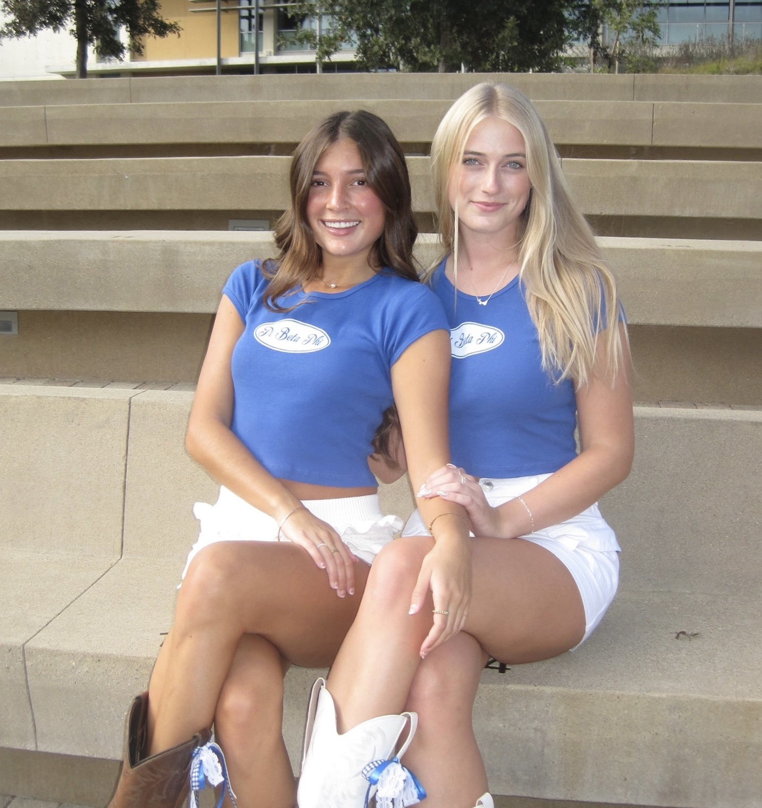
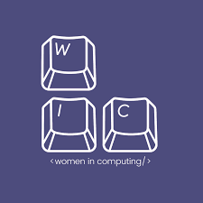

Pi Beta Phi
About
Pi Beta Phi is a fraternity for women, dedicated to philanthropic service through it's philanthropy, Read->Lead->Acheive. Members of Pi Beta Phi uphold the values of integrity, lifelong commitmnet, honor and respect, personal and intellectual growth, philanthropic service to others, and sincere friendship. I am a member of the California Kappa chapter, which is the chapter here at UC San Diego, and was initiated fall of 2023.
Leadership
I am the director of Academics for the CA Kappa chapter of Pi Beta Phi. My role is to oversee fraternity academics. I keep track of our individual chapter members's GPA, the GPA of our chapter as a whole, organize study hours, create academic support plans for members whose GPA doesn't meet chapter expectations, plan a scholarship banquet, and ensure our chapter maintains good academic standing.
WIC
About
Women In Computing is an organization with a chapter at UC San Diego. It is dedicated to uplifting women who are studying computer science, and providing a sense of community. WIC holds projects every quarter, such as creating a website or an AI chat box. WIC also holds networking events, coffee chats, and more.
Awards
I participated in the Fall 2023 project teams, where my team and I created an I Miss my DJ website. This website won first place out of all of the submissions, through a vote by members of WIC.
Girls Who Code

About
Girls Who Code is a free, application-based program that I participated in during the summer of 2022. It's goal is to create a sisterhood of women in computer science, where participants could talk to each other, ask for advice, and feel like a part of an open, supportive community. Different women in computer science fields presented and shared their professional experiences and advice.
Skills
I learned how to use HTML, CSS, and JavaScript to design an interactive website, and created a bare-bones portfolio website, as well as a personality quiz website, which let the user answer questions and told them if they were more similar to Barbie or Raquelle from "Barbie, life in the dreamhouse".